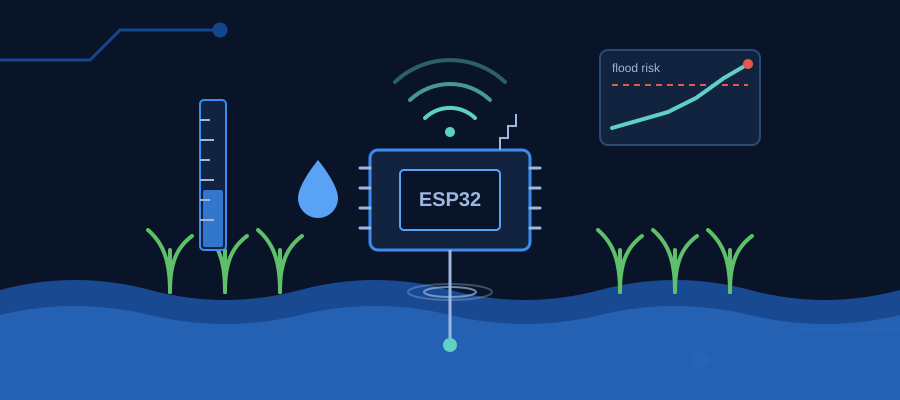
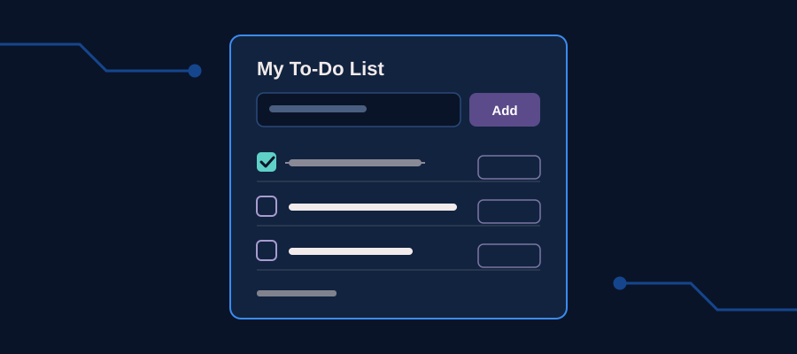

Hello, I'm
Focused on becoming better.
I am just someone trying to become better every day, learning from my experiences and working toward my dreams.
LEARN ABOUT MEI'm an IT student who splits my time between hands-on hardware work and photography — right now I'm building an ESP32-based IoT system that uses machine learning to predict flooding and protect rice seedlings, while also using photography as a way to slow down and notice details I'd otherwise miss. What drives me is that same instinct in both: paying close attention to small signals, whether it's a sensor reading or the way light falls on a subject, and using that to build or capture something better. I'm working toward becoming an engineer who brings that same care and attention to bigger, real-world problems.
I'm currently studying Information Technology, where I first got hooked on the idea of using technology to solve real problems — that interest led me to my current thesis project, building an IoT system that helps predict flooding and protect rice crops.
Outside of school, I enjoy photography, watching K-dramas and gadget reviews, and unwinding with video games on weekends.
Building responsive, well-structured web pages from scratch.
Adding interactivity and dynamic behavior to web pages.
Scripting, data processing, and machine learning basics.
Programming microcontrollers for IoT and sensor-based systems.
Version control, collaboration, and project deployment.
Interpreting data to guide decisions and find patterns.

An ESP32-based system that uses machine learning to predict flooding and protect rice seedlings.
A responsive single-page portfolio built from scratch with a progressive Git history.

A simple task manager where you can add tasks, mark them as done, and delete them. Tasks are saved in the browser.
Want to get in touch? Fill out the form below, email me at giandave.cocon@carsu.edu.ph, or see my work on GitHub.
| Year | Title | Details |
|---|---|---|
| 2026 | BS in Information Technology | Caraga State University |
| 2026 | Thesis: IoT Water Management System | ESP32-based system with machine learning flood prediction for rice seedlings |
| 2026 | Web Development Course Project | Built this responsive portfolio using HTML, CSS, and Git |